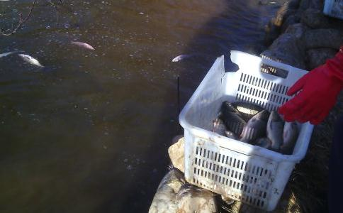

一个人走到菜市场、超市里，看到有鱼、泥鳅、黄鳝、虾子、螺丝、甲鱼等这些动物被杀被卖，根据自己经济情况买一些然后用袋子拧着，去寺院、或长江、或水库湖泊、或公园去放生，顺便给他们念三皈依和念佛菩萨名号！如此就救了一些众生的性命，如果不买他们，他们命运基本上就定了，被杀被吃，如此就进行了一个简单而单纯的救众生生命的过程！为什么说简单而单纯呢？因为您放了，放的那些就不会被杀被吃，不放他们注定就被杀被吃。
也许您一个人的力量很小，也许就买两三条鱼、也许就一斤泥鳅，比起整个地区卖的几乎可以忽略，但是放生放的是一颗心，虽然物命救得很少，但是心的力量可以很大，乃至大到虚空无法计算！地藏菩萨明知道地狱不会空但是还是发誓愿永无止境的救度，难道我们就不能明知道救不完这些众生但还是要坚持去救，那怕一次就救一个生命！因为您救一个那就是一个！如此简单而单纯！
对于我们过惯了似乎安乐安稳的人道 生活的人来说，是很难去体会畜生道的苦楚，况且我们见惯了这些弱小生命的被杀，我们已经麻木了。不过我们也可以试着去观想下自己如果是这些弱小的生命被杀被刮、或者有比我们人类更强大的物种来杀戾我们人类，自己被节节肢解、被砍头、被剖开肚子、如此种种，想必我们还是能够明白这些弱小生命的内心的痛苦和忧虑，我们去救助它们，无非就花费一点点的金钱，但对于这些如浮萍般的物命来说，生命就是它们的全部。所以为什么说放生功德很大，应该就是因为对于这些脆弱的动物来说生命就是它们的全部、他们最宝贵的。法界是公平的，当我们成就了众生避免被杀被吃的死亡命运，那么我们将得到法界给予我们不可思议的回馈。
放生也不用去想功德福报，不用去想这些，学会忘记自己做了什么善事，踏实去做就行了，心里怀着能够救一些算一些的心态就足够了，养成一种习惯，一种利益众生、救拔众生的习惯，如同吃饭睡觉呼吸空气一样。同时自己还应该反过来深深的感恩这些众生，是因为它们，让我们才有机会去发慈悲心，成就了我们自我的提升。放生最重要的是得到一颗慈悲心，一颗视一切众生平等的心，这慈悲心和平等心将成为您永久幸福快乐的源泉。如此在生活中，您将会善待一切生命，您将会逐渐的远离肉食，当您去逛动物园的时候，您会不由自主的给他们真诚的念三皈依和佛号，当您在路上看到动物的时候，您将会习惯性的给他们念几声佛号，当您蹲在地上看到一只小蚂蚁的时候，您能真诚的为它念三皈依和佛号！不用怀疑这些众生能够得到您布施给他们多大的佛法利益，您应该知道心的力量是无量大的，真诚清净恭敬的心能让这些众生得到很大的佛法利益，能让他们早日脱离恶道！只是我们凡夫肉眼看不到他们能少受多少劫的苦！况且我们为它们念佛佛菩萨圣号，更有佛菩萨因地的本愿功德力加持，决定能够利益这些众生。
放生最后放出了自己时时刻刻都要念佛菩萨圣号，因为知道自己周围有很多众生，或者看不到或者看得到，要救度他们就要念，所以也养成自己有空就持佛菩萨圣号，那么这些众生不是都在被我放吗？因此念佛诵经功德很大，大概也是有意无意都能够利益很多众生吧，当然还有其他很多因缘。
从现实的角度说，放生是布施，菩萨六度之一，布施修得好，那么持戒会不用太费力，很多师兄持戒很费力，其实多修布施，那么持戒会觉得很容易。这是我真实体会！特别是很多师兄在戒邪淫，觉得挺难，自己过去也曾经犯过很重邪淫，和自己女朋友同居一年多，邪淫造作很多，淫欲的本质是贪欲、是我执强，所以广修布施积累福报可以扩展心量，让自己的贪心、我执减弱，这样自然淫欲心会减轻很多。人的欲望本是因缘法，只要方法正确，精进去实行，就必定轻松的达到效果，现在自己最大的体会就是要持好戒、要戒好邪淫（乃至起心动念戒邪淫邪思），就是一点：精进的福慧双修。这个精进是发狠心，如一天念三四部长点的经、一天念个5000~10000声佛菩萨圣号，决定效果好得很，而且还一定要坚持。
我真心建议师兄们多多自己去放生，虽然一个人力量很小，但是人的发心愿力可以很大。也能回小向大！放生应该是一个学佛人的习惯、一种生活组成部分！！！所以我常说我要活到老、放到老！！！放生要随缘，但不是随顺自己的懒惰、吝啬和舍不得的习气，随缘随的是时间、地点、环境！一个人放生或几个人放生放生数量不多，不会对市场造成什么影响。但愿大家多多放生，一个人也去放，一个人有时候更好些！放生应该学习一些基本常识，如动物的习性，对放生环境要什么要求，等等这些，如泥鳅黄鳝最好放在水池或静水带较多淤泥的地方，不适合放很深水、水流速很快的地方！具体这些师兄们可以看看这个地址（物命的生活习性）
我们学佛应该随喜放生，更应该自己多多放生，这个世界杀生太厉害了，如果只有杀生而没有放生，这个世界会更恐怖，当您放生的时候您那颗慈悲的心能发出灿烂的光芒，照耀整个世界，世界的杀气都能被您消掉一些，天上的天人会非常的欢喜！难道不值得自豪吗！
祝愿大家福慧增长，早日成佛！！！